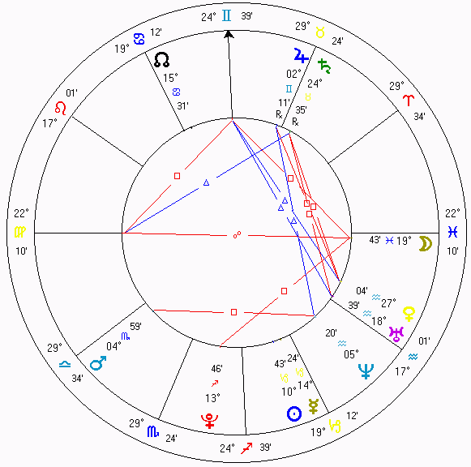

A astrologia é uma pseudociência segundo a qual as posições relativas dos corpos celestes poderiam prover informação sobre a personalidade, as relações humanas, e outros assuntos relacionados à vida do ser humano. É, como tal, uma atividade divinatória, quando usada como oráculo, mas também pode ser usada como ferramenta de entendimento das personalidades humanas.
Os registros mais antigos sugerem que a astrologia surgiu no terceiro milênio a.C. Ela teve um importante papel na formação das culturas, e sua influência é encontrada na astronomia antiga, nos Vedas, e em várias disciplinas através da história. De fato, até a Idade Moderna, astrologia e astronomia eram indistinguíveis. A astronomia começou a divergir gradualmente da astrologia desde o tempo de Cláudio Ptolomeu, e essa separação culminou no século XVIII com a remoção oficial da astrologia do meio universitário.
Os astrólogos afirmam que o movimento e as posições dos corpos celestes podem influenciar diretamente ou representar eventos na Terra e em escala humana. Alguns astrólogos definem a Astrologia como uma linguagem simbólica, uma forma de arte, ou uma forma de vidência, enquanto outros definem como ciência social e humana.
Nenhum estudo científico realizado até hoje mostrou a eficiência da astrologia para descrever personalidades ou fazer previsões e, por isto, ela é considerada pela comunidade científica uma pseudociência ou superstição, não compatível com o Método Científico. No paradigma da física moderna, não existe nenhuma forma de interação que poderia ser responsável pela transmissão da suposta influência entre uma pessoa e a posição de planetas e estrelas no céu no momento do nascimento. Além disso, todos os testes feitos até agora, mantendo métodos rigorosos para incluir um grupo de controle e mascaramento adequado entre experimentadores e sujeitos, não resultaram em qualquer efeito além do puro acaso. Por outro lado, alguns testes psicológicos mostram que é possível elaborar descrições de personalidade e previsões suficientemente genéricas para satisfazer a maioria dos membros de um grande público ao mesmo tempo. Este é o efeito conhecido como o Efeito Forer.